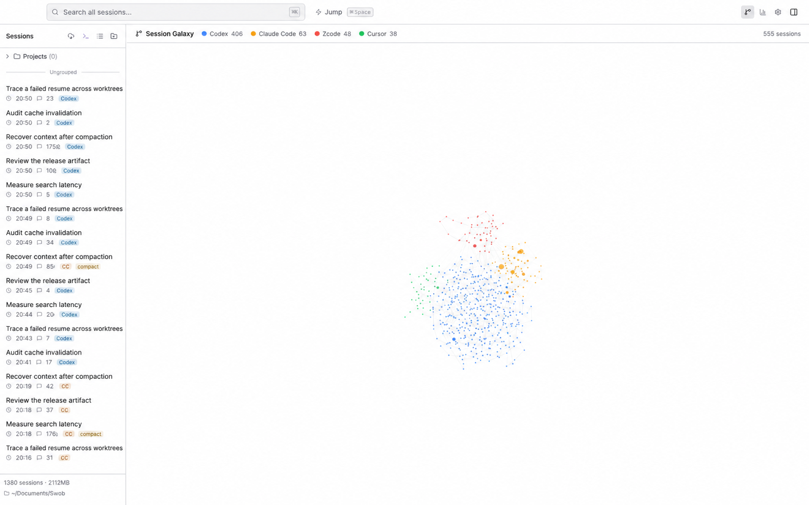

02 · CORE CONCEPT
血统图谱
Resume、Fork 与 compact 会产生关系，不只是“又多了一行”。血统图谱把强证据和相似性邻近分开。

什么是强关系
明确的 fork/continuation ID、物理会话续接和 compact 边界属于可验证血统。相同项目、时间邻近、cwd 或文件亲和度只能帮助导航，不能冒充父子关系。
图谱能做什么
- 从旧逻辑 ID 定位最新可续接的物理会话。
- 看见分叉、续接和上下文压缩造成的历史断面。
- 点击节点回到会话证据，而不是只看视觉聚类。